● Bilirkişi · Avukat · Adli uzman · v0.9.11 beta
Adli belgeleri cihazınızda OCR'layın — bulut yok.
LexAI, hukuk/adli belgelerinizi (UYAP UDF, PDF, görsel, Office) buluta hiçbir veri göndermeden, cihazınızda OCR'lar. Native C++ TensorRT motoru; temiz dijital metni OCR'sız çıkarır, taramayı OCR'lar, tabloları yapısıyla alır ve yan-yana inceleme ile orijinaline yakın çıktı verir.
⬇ 30 gün ücretsiz dene
Nasıl çalışır
Windows 10/11 (x64) · NVIDIA GPU gerekir · kayıtla 30 günlük deneme
Belgeler cihazdan çıkmaz
Native TensorRT hızı
Kendini günceller


GilTecYERLİ · YEREL · TENSORRT